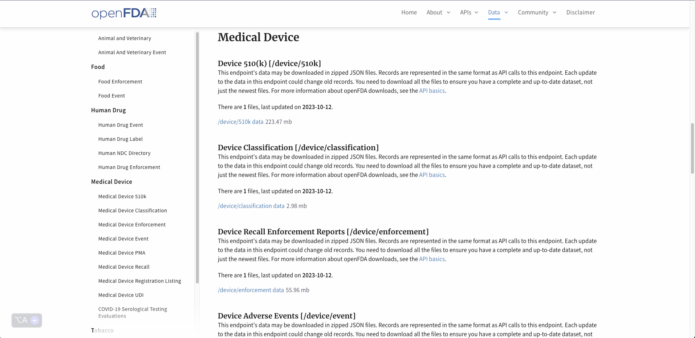
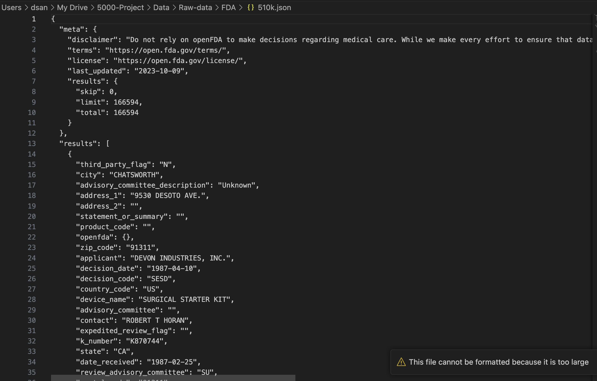
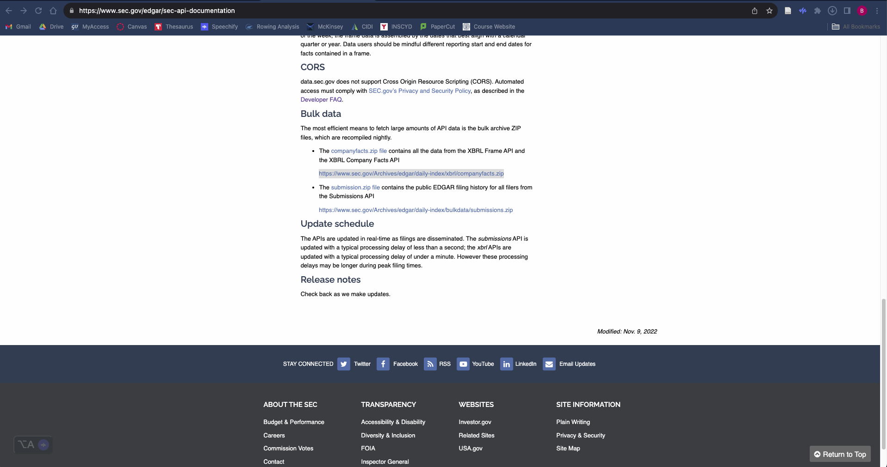

import pandas as pd
import json
with open('/Users/dsan/My Drive/5000-Project/Data/Raw-data/FDA/510k.json','r') as f:
file_510k = json.load(f)
#str_510k = file_510k.read()
df_510k = pd.json_normalize(file_510k,'results')Data Gathering
Introduction
In this section, I will discuss the data gathering process. I will be using the following data sources:
- FDA 510(k) Medical Device Data
- SEC EDGAR 10(K) Annual Financial Filings
- Top Medical Device Company Descriptions from first page of 10(K) through
edgarpackage, an API for SEC EDGAR filings in R - Python NewsAPI for news articles about the subeset of medical device companies I will be analyzing for my project
Importing Data
FDA Data
The first data source is the FDA, which is the Federal Government Body responsible for regulating and approving medical devices and pharmaceuticals. Specifically, I found my medical device dataset under the 510k header header of the openFDA site. The dataset is a JSON file that contains information about medical devices in the inital filing process for approval to the FDA once the company believes their device is ready to go to market. The dataset contains information about the device, the company, the approval process, and the device’s intended use. The dataset is updated daily and contains over 100,000 records.

When I click on the /device/510k data link,a Zip file containing the data is downloaded onto my computer. Once unzipped, I now have access to the JSON file with the underlying data, which I will read into Python through a Pandas DataFrame once I have gathered all my data. Here’s a look at the JSON file: 
Now let’s quickly look at a glimpse of the data to get a better understanding of what it looks like.
df_510k.describe()
df_510k.info()
df_510k.head()<class 'pandas.core.frame.DataFrame'>
RangeIndex: 166594 entries, 0 to 166593
Data columns (total 29 columns):
# Column Non-Null Count Dtype
--- ------ -------------- -----
0 third_party_flag 166594 non-null object
1 city 166594 non-null object
2 advisory_committee_description 166594 non-null object
3 address_1 166594 non-null object
4 address_2 166594 non-null object
5 statement_or_summary 166594 non-null object
6 product_code 166594 non-null object
7 zip_code 166594 non-null object
8 applicant 166594 non-null object
9 decision_date 166594 non-null object
10 decision_code 166594 non-null object
11 country_code 166594 non-null object
12 device_name 166594 non-null object
13 advisory_committee 166594 non-null object
14 contact 166594 non-null object
15 expedited_review_flag 166594 non-null object
16 k_number 166594 non-null object
17 state 166594 non-null object
18 date_received 166594 non-null object
19 review_advisory_committee 166594 non-null object
20 postal_code 166594 non-null object
21 decision_description 166594 non-null object
22 clearance_type 166594 non-null object
23 openfda.registration_number 163690 non-null object
24 openfda.fei_number 163690 non-null object
25 openfda.device_name 164962 non-null object
26 openfda.medical_specialty_description 164962 non-null object
27 openfda.regulation_number 164962 non-null object
28 openfda.device_class 164962 non-null object
dtypes: object(29)
memory usage: 36.9+ MB| third_party_flag | city | advisory_committee_description | address_1 | address_2 | statement_or_summary | product_code | zip_code | applicant | decision_date | ... | review_advisory_committee | postal_code | decision_description | clearance_type | openfda.registration_number | openfda.fei_number | openfda.device_name | openfda.medical_specialty_description | openfda.regulation_number | openfda.device_class | |
|---|---|---|---|---|---|---|---|---|---|---|---|---|---|---|---|---|---|---|---|---|---|
| 0 | N | CHATSWORTH | Unknown | 9530 DESOTO AVE. | 91311 | DEVON INDUSTRIES, INC. | 1987-04-10 | ... | SU | 91311 | Unknown | Traditional | NaN | NaN | NaN | NaN | NaN | NaN | |||
| 1 | N | BRONX | General, Plastic Surgery | 3830 BOSTON RD. | LRO | 10475 | FRAASS SURVIVAL SYSTEMS, INC. | 1987-07-09 | ... | SU | 10475 | Substantially Equivalent | Traditional | [2320762, 1823410, 3011389083, 8022032, 293648... | [1823410, 3011389083, 2936485, 3013298431, 300... | General Surgery Tray | General, Plastic Surgery | 878.4370 | 2 | ||
| 2 | N | WILMINGTON | Anesthesiology | 42 INDUSTRIAL WAY | BYD | 01887 | PORTEX, INC. | 1988-01-19 | ... | AN | 01887 | Substantially Equivalent | Traditional | [3003902312, 3006534321, 8010485, 3006061749, ... | [3003902312, 3006534321, 3006061749, 301198796... | Condenser, Heat And Moisture (Artificial Nose) | Anesthesiology | 868.5375 | 1 | ||
| 3 | N | ST. LOUIS | General, Plastic Surgery | P.O. BOX 466 | Summary | KKX | 63166 | ANGELICA UNIFORM | 1995-01-02 | ... | HO | 63166 | Substantially Equivalent | Traditional | [2320762, 3007886583, 3006787036, 1032347, 300... | [3007886583, 3006787036, 1032347, 3004133257, ... | Drape, Surgical | General, Plastic Surgery | 878.4370 | 2 | |
| 4 | N | BURLINGTON | Cardiovascular | 32 SECOND AVE. | Statement | MKJ | 01803 | ZOLL MEDICAL CORP. | 1993-10-07 | ... | CV | 01803 | Substantially Equivalent | Traditional | [1219103, 3002714378, 3013153405, 3012636179, ... | [3002714378, 3013153405, 6736, 3012636179, 300... | Automated External Defibrillators (Non-Wearable) | Cardiovascular | 870.5310 | 3 |
5 rows × 29 columns
It looks like there’s 29 different qualitative columns and over 150,000 rows. I will be using this data to analyze the medical device industry and the companies that make up the industry, so I will primarily be focused on gathering more information about the financial information of the top 100 medical device companies.
df_510k.to_csv('./outputs/fda.csv', index=False)SEC EDGAR 10(K) Annual Financial Filings
The second data source is the SEC EDGAR database, which is the Federal Government Body responsible for regulating and approving financial filings for publicly traded companies. Specifically, I will be using the 10(K) filings, which are annual financial filings that publicly traded companies are required to file with the SEC. The 10(K) filings contain information about the company’s financials, business operations, and risk factors. The 10(K) filings are the most comprehensive financial filings that companies are required to file with the SEC.
I scrolled down to the Bulk Data section, and downloaded the companyfacts.zip folder, here, which contains a JSON file with the underlying data for all the 10(K) filings of public companies currenlty stored in the SEC EDGAR database.

Now that I have all the data in the companyfacts.zip folder, I will read the JSON file into a Pandas DataFrame so that I can start extracting the relevant information I want from it. Initially, I want to get the company name and the matching CIK number. Once I have all the unique CIKs, I will then be able allign the CIKs with the names of companies that have filed 510(K)s in my FDA dataframe. Finally, once I’ve completed this matching, I’ll be able to use this information to extract the 10(K) filing from the SEC EDGAR database for the year the company submitted their initial 510(K) application using the edgar package in R so that I can match quantiative financial data of the company with the qualitative data of the FDA Database.
import glob # this package will help me read in all the files in the companyfacts folder
import tqdm # this package will help me track the progress of the for loop because it will take a decent amount of time
filenames = glob.glob('/Users/dsan/My Drive/5000-Project/Data/Raw-data/SEC/companyfacts/*.json') # reading them into a list
sec_list = [] # empy list to store rows of dataframe containing SEC Name and CIK
for file in tqdm.tqdm(filenames):
with open(file, 'r') as f:
try:
data = json.load(f)
name = data["entityName"]
cik = data["cik"]
row = {"CIK": cik, "SEC_name": name}
sec_list.append(row)
except:
continue # some files are will raise errors, so for the sake of expediency, we skip them
df_sec = pd.DataFrame(sec_list) # converting list of dictionaries to dataframe
df_sec.info()
df_sec.to_csv('./outputs/sec.csv', index=False)100%|██████████| 17415/17415 [07:45<00:00, 37.43it/s] <class 'pandas.core.frame.DataFrame'>
RangeIndex: 17345 entries, 0 to 17344
Data columns (total 2 columns):
# Column Non-Null Count Dtype
--- ------ -------------- -----
0 CIK 17345 non-null object
1 SEC_name 17345 non-null object
dtypes: object(2)
memory usage: 271.1+ KBNow that we’ve loaded the SEC EDGAR data into a Pandas DataFrame, we can see that We have the CIKs and SEC_names of 17345 different companies.
Next Steps: Data Cleaning To-Do List
Matching FDA company names with and SEC EDGAR Data
Now that we have the CIKs and SEC_names of 17345 different companies, we can now match the CIKs with the names of companies that have filed 510(K)s in my FDA dataframe. I will be doing that on my data-cleaning tab, here: Data Cleaning
R edgar Package: API Pull of 10(K) Filings Company Descriptions
Once I’ve matched the company names in the FDA dataset with the SEC EDGAR dataset, I will then be able to use the edgar package in R to pull the company description blurb on the front page of 10(K) filings for the year the company submitted their initial 510(K) application. I will be doing that on my data-cleaning tab, here: Data Cleaning. To check out the edgar package, click here and to check out the documentation, click here.
NewsAPI Pull via Python
In order to get the latest news on companies active in the medical devices space, I’ll be running a NewsAPI query on the subset of companies I will be analyzing for my project. My project will focus on a subset of the maximum size of the 100 companies with the most 510(K) device applications in the FDA dataset. I can only choose the top 100 because NewsAPI caps requests at 100 per day. I will be doing that on my data-cleaning tab, here: Data Cleaning. To check out the NewsAPI, click here and to check out the documentation, click here.